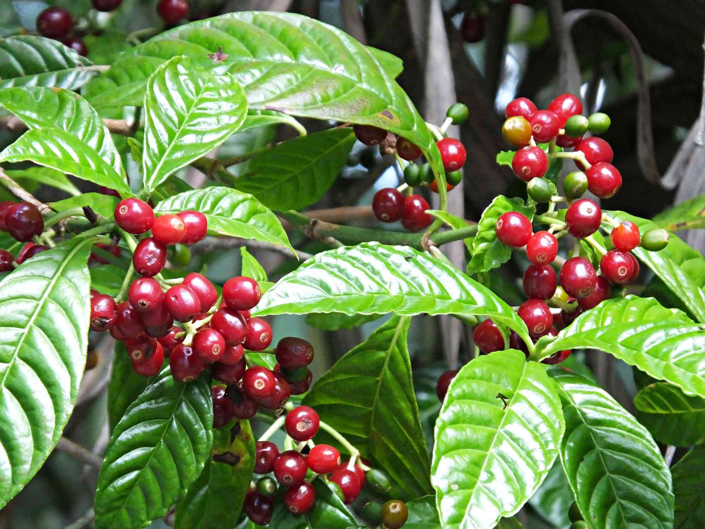

Si hay algo que tenemos en común todos nosotros, es que, en un momento dado de nuestra vida, una buena taza de café ha cambiado la hoja de ruta de lo que hacíamos. Es una experiencia tan contundente al paladar que no hace falta racionalizarla ni verbalizarla. Esa es la sensación que queremos trasmitir a aquellos que nos eligen. Porque no hay nada que nos apasione más ni podemos imaginar dedicarnos a otra cosa que no esa a saborear y compartir un buen café
Nuestros métodos de obtención del café
Debido a que los granos no pueden tener defectos, se necesitan cultivar cuidadosamente las plantas de café y cosechar en el momento adecuado. Los productores deben cumplir con las mejores prácticas de procesamiento y también se deben seguir protocolos de almacenamiento. El cultivo del café de especialidad se lleva a cabo en regiones específicas con condiciones especiales de altura, humedad, sombra y temperatura. Todo esto se realiza artesanalmente. A diferencia de un café comercial que utiliza granos defectuosos y de poca calidad, con el café de especialidad seguimos un proceso que cuida todas sus propiedades. Seleccionamos siempre cafés de especialidad. Cafés que han obtenido más de 80 puntos en cata. Cada café se tuesta con un perfil único acorde a su origen y de forma artesanal, respetando siempre sus cualidades únicas. Etiquetamos nuestro café con todas sus propiedades y todas aquellas características que lo hacen especial. (notas de cata, altura, finca, fecha de tueste).